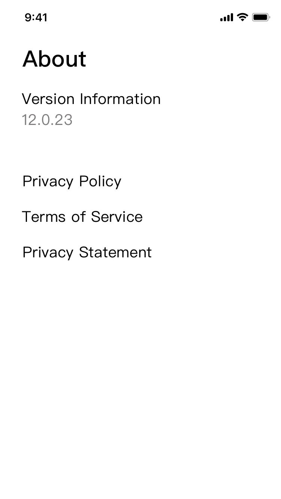
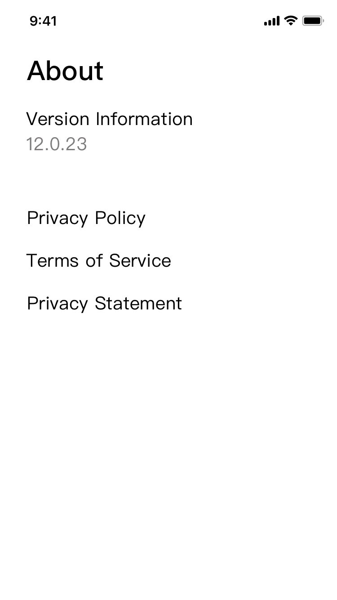

The Hi-fi UI in the banner are by Xi
Duration: 3 weeks
Role: PM & Interaction Designer
Team: Yoyo(PM); Yilai(Content Operations Manager); Jiao(BD); Youqiang(Interaction Designer); Xi(UI Designer); Jiaxin(UX Researcher); Qin(Project Manager)
context
Based on the report on mobile game feasibility by Yilai, we found that the game distribution business on TCL mobile phones(Alcatel) has a large potential to monetize, so my team considered building a mobile game platform named Game Zone.
This project will be constructed in several stages. The first phase of the project will focus on: 1. Launch the mini-game platform in a short time to accumulate users, and make users have the feeling that the platform has lots of mini-games 2. Collect game-related data to analyze and use the analysis for future operations strategy and large game distribution.
User Interfaces

 
